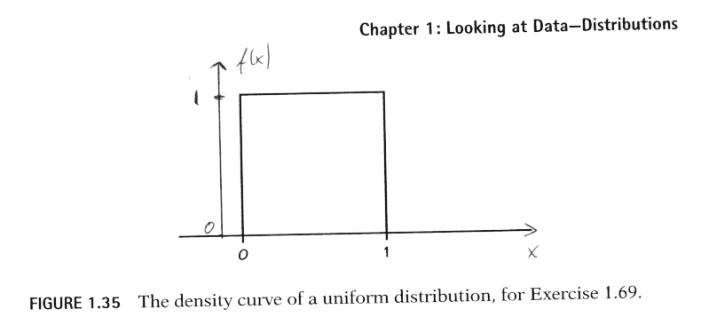

Stat 2000, Section 001, Homework Assignment 3 (Due 9/18/2002 11:59pm)
- 0) Reading: Section 1.3
- 1) Please work on the following textbook exercises from
Moore/McCabe (3rd Edition):
- Exercise 1.69 (1 Point):
Many software packages have ``random number generators'' that produce
numbers that are distributed uniformly between 0 and 1. Figure 1.35
graphs the density curve of the outcome of a random number generator.
(a) Check that the area under this curve is 1.
(b) What proportion of the outcomes are less than 0.25?
(Sketch the density curve, shade the area that represents the
proportion, then find that area. Do this for part (c) also.)
(c) What proportion of outcomes lie between 0.1 and 0.9?

- Exercise 1.70 (1 Point):
Many random number generators allow users to specify the range of the
random numbers to be produced. Suppose that you specify that the
outcomes are to be distributed uniformly between 0 and 2. Then the
density curve of the outcomes has constant height between 0 and 2, and
height 0 elsewhere.
(a) What is the height of the density curve between 0 and 2? Draw a
graph of the density curve.
(b) Use your graph from (a) and the fact that areas under the curve
are relative frequencies of outcomes to find the proportion of
outcomes that are less than 1.
(c) Find the proportion of outcomes that lie between 0.5 and 1.3.
- Exercise 1.74 (1 Point):
A study of elite distance runners found a mean weight of 63.1 kilograms
(kg), with a standard deviation of 4.8 kg. Assuming that the
distribution of weights is normal, sketch the density curve of the
weight distribution with the horizontal axis marked in kilograms.
(Based on M. L. Pollock et al., ``Body composition of elite class
distance runners,'' in P. Milvy (ed.), The Marathon:
Physiological, Medical, Epidemiological, and Psychological Studies,
New York Academy of Sciences, 1977.)
- Exercise 1.76 (1 Point):
Use the 68-95-99.7 rule to find intervals centered at the mean that
will include 68%, 95%, and 99.7% of the weights of the elite runners
described in Exercise 1.74.
- Exercise 1.77 (1 Point):
The length of human pregnancies from conception to birth varies
according to a distribution that is approximately normal with mean 266
days and standard deviation 16 days. Use the 68-95-99.7 rule to
answer the following questions.
(a) Between what values do the lengths of the middle 95%
of all pregnancies fall?
(b) How short are the shortest 2.5% of all pregnancies? How long
do the longest 2.5% last?
- 2) (10 Points) First answer the following three questions from Moore/McCabe
(3rd Edition) using
Table A in the textbook. Then check your results using the
Web at
http://davidmlane.com/hyperstat/z_table.html
- Exercise 1.82:
Using either Table A or your calculator or software, find the relative
frequency of each of the following events in a standard normal
distribution. In each case, sketch a standard normal curve with the
area representing the relative frequency shaded.
(a) Z <= -2.25
(b) Z >= -2.25
(c) Z> 1.77
(d) -2.25 < Z < 1.77
- Exercise 1.84:
The variable Z
has a standard normal distribution.
(a) Find the number z
such that the event Z < z
has relative
frequency 0.8.
(b) Find the number z
such that the event Z > z
has relative
frequency 0.35.
- Exercise 1.87:
The Graduate Record Examinations (GRE) are widely used to help predict
the performance of applicants to graduate schools. The range of
possible scores on a GRE is 200 to 900. The psychology department at a
university finds that the scores of its applicants on the quantitative
GRE are approximately normal with mean mu = 544
and standard deviation sigma = 103.
Find the relative frequency of applicants whose score X
satisfies each of the following conditions:
(a) X > 700
(b) X < 500
(c) 500 < X < 800
Given that you have access to the Web at all times, which
method (use of the table or the Web application) do you prefer,
e.g., which is easier to use. Explain.
By the way, the interactive Normal table at
http://davidmlane.com/hyperstat/z_table.html
is only one small part of an entire on-line introductory
statistics book. If you ever need to look up some facts
from an introductory statistics
class but have no book at hand, you may find the answer
in HyperStat at
http://davidmlane.com/hyperstat/index.html.
- 3) (10 Points) In class, we introduced the Web-based statistical
software package WebStat 3.0. It is accessible at
http://dostat.stat.sc.edu/webstat/3.0/. The "Cost of
Victories" data set is available at
http://www.math.usu.edu/~symanzik/teaching/2002_stat2000/victories.dat.
The first column contains the number of wins for each
team, the second column the Payroll (rounded to the nearest
million).
Start up WebStat. There are several options how to load
data into WebStat. Depending on your computer and Web browser
(Internet Explorer or Netscape) and the version of this
browser (4.x, 6.x), some of these options may not work for you.
You have to determine yourself what will be working in your
setting. Here are the options:
- 1) Click on "Data", then Load data "From file", then
copy (or type) in the "WWW address" exactly as given above,
and finally click on "Load File". You do not have to change any
of the default settings. Your data should show up now
in the spreadsheet cells of the WebStat window.
- 2) Click on "Data", then Load data "From paste".
Open the data file in a new window, e.g., another window
of your Web browser or save the data to a file and then
open this file with your favorite text editor.
Copy the data into the buffer (by marking it and selecting
the copy option), click inside the text box of the
"Load data from paste" window, and use Ctrl-V (or a mouse
button) to paste the data into the box. Finally
click on "Load File". You do not have to change any
of the default settings. Your data should show up now
in the spreadsheet cells of the WebStat window.
Please note that some Web browsers do not allow to copy/paste
directly from one Web window into another - in that case,
you need to copy/paste the data from a text editor.
- 3) Feel free to work with other options, e.g., save the
data into a local file and load this file. If nothing
works, type in the data manually this time and please
let me know about your problems.
After having loaded the data, select "Stat" and
Summary Statistics by "Columns". Select one (or both)
variables and calculate all summary statistics.
You can save (or print) your results by clicking
on the small "floppy disk" symbol between
"Edit" and "X". A new window appears where you can
make your selection underneath the "File" menu,
e.g., "Save as" or "Print". You should turn
in a printout of the summary statistics. Are the
results identical to what we calculated in class?
Now go to "Graphics" and do a "Histogram",
"Stem and Leaf Plot", and "Boxplot"
for both variables, using the
default options. Produce printouts of your
graphics and comment on their quality, e.g.,
do they look "optimal" (e.g., how many classes
are used for the histograms and how many should
be used ideally). In case something doesn't
look "optimal", is there a way to improve those
graphics? If so, please explain how to improve them
and also produce a printout of your improved graphics.
Please go ahead and experiment with other features
of WebStat.
You can work on Exercise 3) by yourself or in
small groups of up to 3 students. Please turn in your
group solution separately from the answers to
questions 1 and 2 and make sure that all names of group
members are listed on this part.